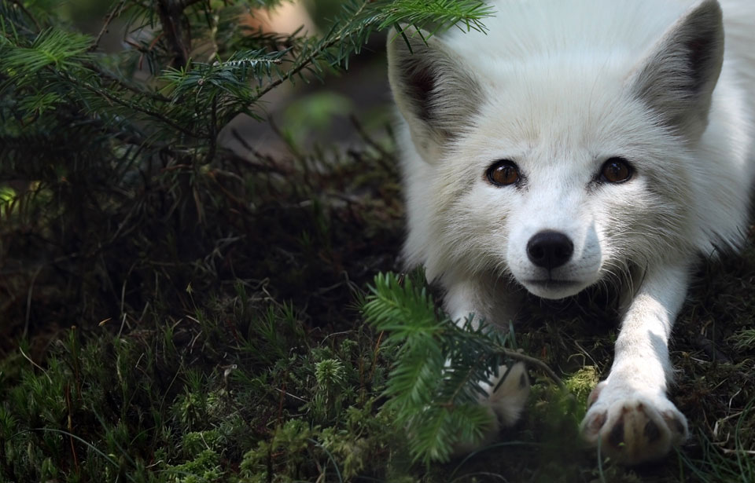

The Arctic fox (Vulpes lagopus) is a captivating and resilient species that inhabits the Arctic tundra regions of North America, Europe, and Asia. One of the defining features of the Arctic fox is its incredible adaptation to the harsh Arctic environment. Its thick, double-layered fur coat not only provides insulation against freezing temperatures but also undergoes a seasonal color change, allowing the fox to blend seamlessly with the snowy landscape in winter and rocky terrain in summer.
Arctic foxes play a crucial role in maintaining the delicate balance of their ecosystem. As opportunistic omnivores, they help control the population of small mammals and birds, contributing to the overall health and diversity of the Arctic food web. Their foraging behavior also aids in seed dispersal, influencing plant growth and distribution in their habitat.
Despite their remarkable adaptations, Arctic foxes face significant challenges that threaten their survival. Climate change poses a severe threat as rising temperatures impact their icy habitats and alter the availability of their prey. Additionally, human activities, such as oil and gas development, can lead to habitat degradation and fragmentation.
Conservation efforts are essential to ensuring the continued existence of Arctic foxes and the preservation of their unique ecosystem. By supporting initiatives focused on habitat protection, climate change mitigation, and responsible land use, we can contribute to the well-being of these incredible creatures. Furthermore, raising awareness about the importance of Arctic fox conservation helps garner public support and encourages sustainable practices that benefit both wildlife and the environment.
